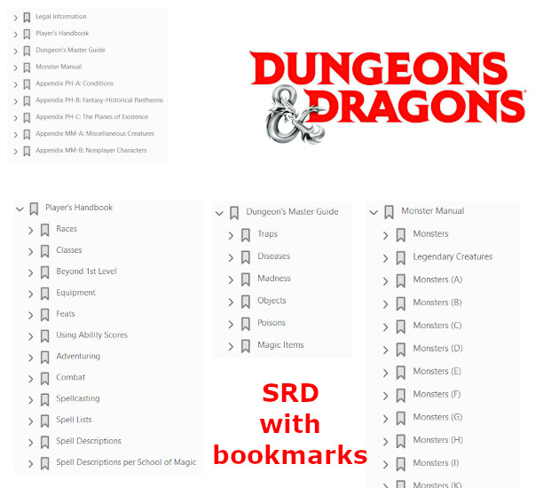

Mars 2024
Du SRD, de l'OGL et de l'ORC !#
Hello et bienvenue aux égarés qui regardent parfois cette page !
A l'orée de ce printemps 2024, je me résous à faire une petite bafouille. Je ne parlerai pas du contexte politique intérieur ni extérieur de la France. Mais plutôt de mes activités rôlistes, pour ceux que ça intéresse.
Le plus récent : D&D SRD avec bookmarks en français en anglais#

Bon, certes WotC a publié des documents SRDs en anglais et en français, mais les bookmarks ne sont soit pas là, soit en vrac. J'ai corrigé cela avec une petite publication itch.io :
- Un PDF en anglais avec tous les bookmarks,
- Un PDF en français avec les bookmarks réarrangés.
En fait, en regardant sur drivethru, des gens font payer le positionnement de bookmarks sur les documents originaux Wizards. C'est certain que cela représente un certain travail. Mais, comme le contenu (assez important voire énorme) est gratuit, je trouve ça un peu mesquin de faire payer les bookmarks, même si sans bookmarks, c'est chiant de naviguer dans les PDFs.
Bon, enfin, vous avez un truc exploitable pour mobile et tablette.
Le SRD de D&D 5e#
Bon, disons-le, c'est un bouquin de bonne facture :
- +400 pages de trucs, dont tout ce qu'il faut pour joueur à D&D 5e en anglais et en français ;
- Les règles et beaucoup de contenu ;
- Une traduction pas trop nase et "officielle".
Encore une fois, je tire mon chapeau à WotC, même si c'est une société américaine avec ses gros défauts. Il faut saluer quand même cette volonté de donner à la communauté. Les joueurs ne se souviennent pas (ou n'étaient pas nés), mais c'est pas TSR qui aurait fait ça ! Et en plus, ils livrent +400 Pages en français sans que des gros vilains comme les BBE viennent vous soutirer des sous.
Oui, je n'aime pas les BBE. Ils ne rappellent la mafia de Casus qui faisait la pluie et le beau temps dans le monde rôlistes des années 80 avec leur ton pourri ironique des "mecs qui n'assument pas de jouer au JdR et qui doivent absolument tourner tout en dérision". Heureusement, Descartes était un peu à l'écart de cette mafia de copains qui, à la française, avait créé un genre de système de copinage où certains en "croquaient" et d'autres non... Beurk...
Pas du tout l'esprit Jeux et Stratégies. C'est pourquoi je m'enorgueillis de ne pas avoir un seul BBE dans ma bibliothèque ! Quand je pense à ce qu'ils ont voulu faire à WotC avec leur plagiat honteux, je ne suis pas surpris.
Bon, enfin, c'est ma compréhension de l'incident. Critiquez les méchants WotC, bonnes gens, mais regardez dans les faits ceux qui mettent à disposition des contenus très épais gratuitement, avec des règles pour faire vos propres produits...
La licence ORC#
Certaines boutiques contestant la licence OGL dans le monde du JdR, Paizo et Chaosium, entre autres, se sont alliées pour créer une autre licence : ORC. Intéressant.
La licence définit essentiellement les contours entre trois types de contenus :
- Le contenu sur lequel il n'est pas possible de mettre un copyright (pour faire simple toutes les règles) ;
- Le contenu protégé (Reserved Material) qu'il n'est pas possible de copier sans l'autorisation des auteurs ;
- Le contenu "ouvert" (Licensed Material) dont il est possible de dériver des choses.
Par défaut :
- Tout ce qui est règles du jeu (au sens large) est public ;
- Tout ce qui est lié à des lieux, des personnages, etc. est "privé" ; il faut donc spécifier ce que la licence couvre pour "ouvrir son contenu en open source".
Ce qui est assez novateur dans ce mode de licence, est de tenter de vraiment faire la part des choses entre les trois types de contenus et de prendre pour base la jurisprudence américaine qui dit que les règles de jeu ne peuvent pas donner lieu à un dépôt de copyright. Cette affirmation est une vérité, mais le fait de la postuler change un peu la donne et cela dans deux dimensions :
- N'importe qui peu faire une extension pour un système de jeu X ou Y sans voir à payer de royalties. Les royalties peuvent s'expliquer dans le cadre de l'utilisation d'une marque mais pas dans l'utilisation d'une mécanique de jeu.
- La licence ORC définit une filiation : si vous dérivez de nos règles de jeu, alors vous acceptez obligatoirement de donner vos innovations de mécaniques à la communauté des designers œuvrant dans le même système de jeu.
Le premier point précise la logique de WotC dans la mesure où n'importe qui peut se déclarer compatible avec 5e sans mettre un logo. Le second indique que les mécaniques de jeu, une fois leur filiation déclarée, doivent rendre leu innovations "ouvertes". Cela concerne les sorts, les monstres et les objets magiques, mais pas leur filiation avec des noms propres (voir ORC AxE).
Ce qui est drôle est que, si l'on y regarde de plus près, le SRD de D&D 5e est totalement dans la ligne de la licence ORC (bien que ce contenu ait été publié sous les licences OGL et CC 4.0) : les sorts et les objets magiques ont perdu leurs noms propres pour devenir des "mécaniques".
A qui appartient le texte de la licence ?#
Le texte est déposé à la bibliothèque du Congrès américain et, en cela, est supposé durer (très) longtemps sans être altéré. Il est possédé par Azora Law, un cabinet d'avocats de Seattle, supposé garder une certaine neutralité dans le sujet des licences.
Les différences avec la licence OGL V1.0a#
Bien qu'il y ait eu des version ultérieures de cette licence, c'est bien la version 1.0a qui se trouve dans la plupart des bouquins liés à D&D, à commencer par le SRD de D&D 5e !
La licence OGL V1.0a établit aussi le distinguo entre :
- Ce qui est Open Game Content (article 1. (d)) : les règles du jeu au sens large sans référence à la seconde catégorie de matériel.
- Ce qui est Product Identity (article 1. (e)) : tout ce qui est contenu identifiable comme n'étant pas une règle de jeu (au sens large).
- Ce qui est Trademark (article 1. (f)) : tout ce qui est marque.
On pourrait faire un petit tableau comparatif :
| Type de contenu | OGL V1.0a | ORC V1.0 | | Règles du jeu | Open Game Content | Licensed Material | | Contenu non ouvert | Product Identity | Reserved Material | | Contenu ouvert | Open Game Content | Expressly Designated Licensed Material | | Référence de filiation | Amendement de la Copyright notice (article 15) | Notice complète à 4 sections | | Texte de la licence | Possédé par WotC | Possédé par Azora Law | | Pérennité de la licence | Article 9 non pérenne | Article V. b. pérenne |
Sur les trois premiers paramètres, les deux licences sont très proches. En ce qui concerne la filiation, la licence ORC est plus précise. En ce qui concerne le risque juridique que WotC remette en cause la licence OGL, tout est lié à l'article 9 :
9. Updating the License: Wizards or its designated Agents may publish updated versions of this License. You may use any authorized version of this License to copy, modify and distribute any Open Game Content originally distributed under any version of this License.
Soit en bon français :
9. Mise à jour de la licence : Wizards ou ses représentants désignés peuvent publier des mises à jour de cette licence. Vous pouvez utiliser n'importe quelle version autorisée de cette licence pour copier, modifier et distribuer n'importe quel contenu Open Game Content originellement distribué sous n'importe quelle version de cette licence.
Pas très clair, hein ? On parlera de risque juridique.
Si je fais une lecture optimiste de l'article 9, je me dis que rien ne peut vraiment changer. Si j'ai utilisé la licence en version 1.0a pour copier, modifier et distribuer un contenu Open Game Content, je pourrai utiliser dans le futur n'importe quelle version autorisée de la licence.
Mais je peux faire une lecture pessimiste de l'article 9 en disant que le terme "autorisé" est problématique. En effet, supposons que WotC n'autorise plus la licence V1.0a, mais autorise la version V12 à la place et que cette version me permet toujours de copier, modifier et distribuer mon contenu Open Game Content originellement distribué sous V1.0a, mais à la différence qu'il faut que je donne 50% de mes gains financiers à WotC. C'est tout à fait possible...
Même si j'aime bien WotC, je comprends la peu panique qui s'est emparée de la communauté OGL quand des rumeurs ont fait part de la volonté de WotC de révoquer la licence OGL V1.0a.
La licence ORC résout le problème.
Un champ d'opportunités ?#
Cette innovation de licence est très intéressante dans la mesure où :
- Elle affirme haut et fort que les mécanismes de jeu ne sont pas "patentables" et qu'ils appartiennent à la communauté, eux ainsi que tous leurs dérivés et enfants ;
- Elle pérennise l'ouverture du contenu en permettant aux auteurs de protéger un contenu (proche de celui du droit d'auteur) ainsi que de le donner à la communauté s'ils le souhaitent.
- Elle est irrévocable.
Dans ce sens, on peut dire que cette licence ORC est un "OGL 2.0".
Une question alors : combien de temps faudra-t-il à WotC pour adopter la licence ORC (ou créer son clone) ?
Ouverture de BRP 5e en ORC#
Bon alors, évidemment, la société Chaosium s'est engouffrés dans le sujet ORC et a publié quasiment toute la 5e de Basic RolePlaying (BRP) system en ORC (et en RTF modifiable en plus, petit message adressé à WotC en passant, ces derniers ne fournissant que du PDF pénible à retraiter).
Ne cachons pas notre plaisir, je suis content ! BRP est un des systèmes que j'aime le plus et je suis content de pouvoir imaginer de pouvoir créer un univers BRP "vendable" au travers de cette licence (même si je ne le ferai sans doute jamais). A première vue, la licence ORC a décoincé nos amis de Chaosium qui mettaient, du temps de la 4e, des contraintes fortes à l'utilisation du système de jeu BRP (ah le fameux Reserved Material).
Il faut que je regarde ce que fait Paizo dans le domaine.
Tout cela va dans le bon sens...
Warhammer 4e#
Voilà quelques mois, j'étais chez un revendeur de BDs de la région et ce dernier vend quelques JdRs. J'ai acheté la version 4 de Warhammer Fantasy Roleplay (WFRP) en français. Puis je l'ai rangé sur une étagère après avoir lu quelques pages.
Voilà quelques jours, HumbleBundle proposait pour 25$ toute la nouvelle version de la campagne The Enemy Within. Attention, il ne reste que 11 jours !
J'ai joué cette campagne durant plus de deux ans avec WFRP 1e en français, avec un MJ qui, quelques années plus tard, nous a quitté.
J'ai acquis les PDFs (bien que je n'aime pas ça et que je préfère le papier) et puis j'ai commencé par le début en lisant le Starter Set.
J'aime bien ce jeu pour pas mal de raisons :
- Il est assez facile de rentrer dans l'univers ;
- L'utilisation de la magie n'est pas complètement folle (elle est réglementée !) ;
- Le système de jeu est top, et je le trouve encore mieux en V4 qu'en V1 ;
- En fait, le jeu est simple parce qu'il est cohérent.
Et puis j'aime bien ce monde assez dur, violent, et sous la menace constante du Chaos. Finalement, j'ai repris la lecture du bouquin de règles en PDF, en anglais cette fois, avec des petites incursions dans le bouquin papier français qui est quand même un beau bidule bien lourd.
Je ne dis pas que je ne ferai pas jouer les petits scénarios du Starter Set. J'en ai trouvé une version physique pas cher sur Vinted. C'est mieux pour les cartes. Il me reste à trouver le bouquin de règles en anglais, parce que, j'ai de plus en plus de mal à me faire aux traductions.
Enfin, les joueurs d'aujourd'hui ne se rendent pas compte : les bouquins sont hyper-luxueux et le contenu est quand même souvent de grande qualité. Quand je vois les vieux jeux, les Grands Anciens comme dirait HPL, je suis impressioné par la qualité (Warhammer v4, D&D 5e, Call of Cthulhu 7e et même Runequest 4e). Quand on a vécu les premières éditions de tout cela, et les remakes plus ou moins foireux, on est content de ce qui sort aujourd'hui (même si ça coûte toujours beaucoup de sous).